艦これ：航空母艦「天城」改造記念に「天城神社」へ行ってきたった。
公開日：
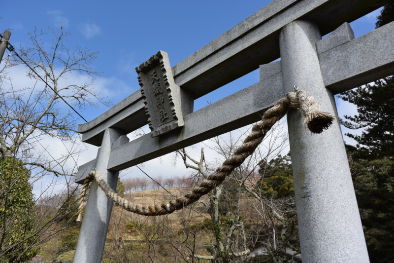
3月第一週は、友人の不幸を慰めるため、伊豆旅行に出かけた。ただ、それだけだと旅費が経費にならないので、艦これの記事の取材ということで「天城神社」詣でにもいく。というか、本命はあくまでも取材であり、友情なぞ二の次なのである！！
航空母艦「天城」
当初、「天城」型巡洋戦艦の一番艦として横須賀で起工されるが、ワシントン海軍軍縮条約の締結により、妹の「赤城」とともに空母へと改装されることになるが、関東地震に被災して大破、解体処分される（ﾁｰﾝ
代わりに空母へ改装されたのが、条約締結で「天城」「赤城」の改装餌（改造資材ともいう）になるはずだった戦艦「加賀」。空母に向かない戦艦（全長が短く航空甲板が長く取れない、速力が巡洋艦に劣り、重量機の発艦が困難）を無理やり改装した結果、いろいろ大変なことになった。興味ある人は調べて。とにかく「天城」は解体され、横須賀海軍工廠内の浮き桟橋の材料になりましたとさ（ﾁｰﾝ
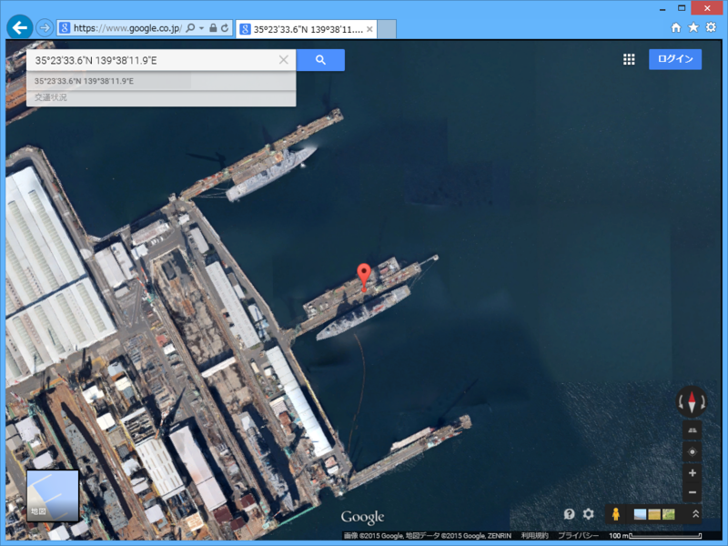
（今でもジャパン マリンユナイテッド横浜事業所磯子工場の浮桟橋として活躍する「天城」氏）
そんなこんなで死産してしまった「天城」だが、ミッドウェー海戦で「赤城」「加賀」が失われたことをうけ、再び「雲龍」型航空母艦の2番艦として生を受けることになる。これまで空母には“縁起のいい獣の名前”をつける習わしだったが、日本海軍も名前のレパートリーが尽きたらしく、「赤城の件もあるし、山とかの名前でいいんじゃね？」ということになったとかならなかったとか（ほかにも「那須」という名前が検討されたようだ）。
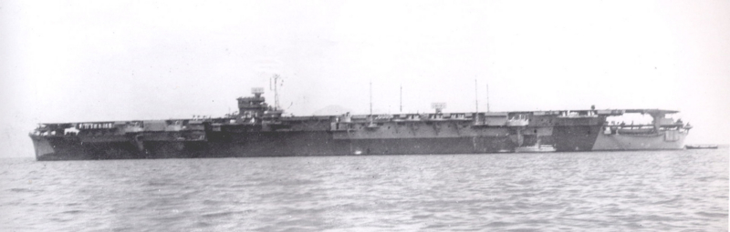
こうして2度目の正直で爆誕できた「天城」だったが、今度は船体こそ完成したものの、載せるべき艦載機がなかった（ﾁｰﾝ
動かそうにも重油が尽きていた日本海軍は「天城」を呉の浮き砲台として使ったが、呉大空襲で大破・横転した。
この横転した時のズッコケ方がユニークだったせいか、呉大空襲の被害状況を象徴する写真としてよく使われる。こっちからみると、とてもダイナミックなコケ方なのが分かる。
艦これ「天城」さんが大破した時にぐてーっとなるのは、これが由来らしい。でも、これ、完全に事後ですわ。ほんとうにおおきにですわ（何
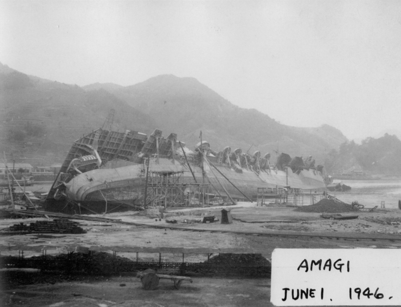
戦後は引き上げられ、船体の一部が運輸省鉄道総局に譲渡。それがさらに函館港の船舶修理用ポンツーンとなり、戦争でボロボロになっていた青函連絡船を修理するのに役立ったそうな。
天城神社
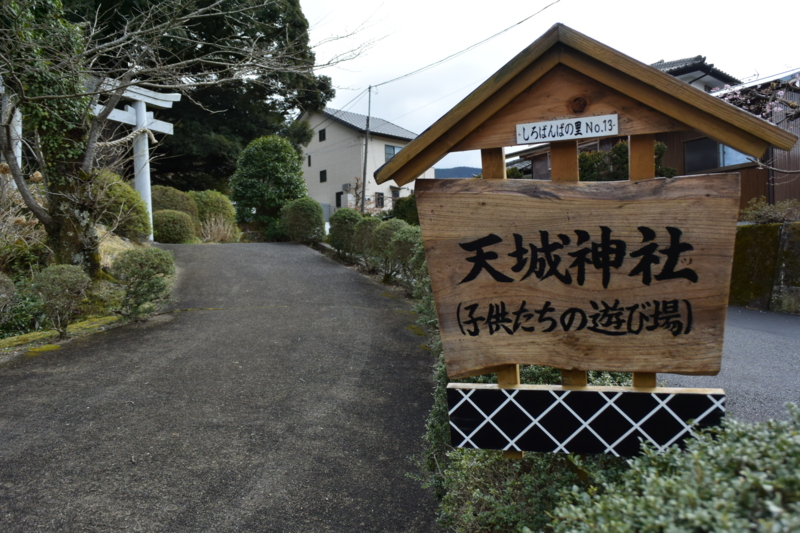
『帝国海軍と艦内神社――神々にまもられた日本の海』 - だるろぐ によると、「天城」には「天城神社」が艦内神社として分祀されていたのだそうな。下田街道沿いにある湯ヶ島という集落にあり、のんびりとした雰囲気。子どもたちの遊び場になっているらしい。
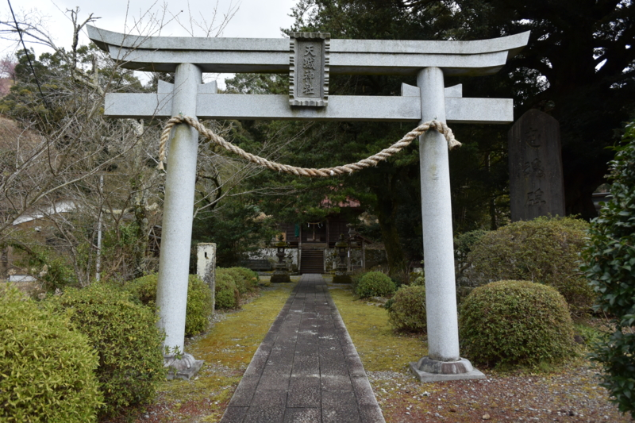
割とこじんまりした神社。
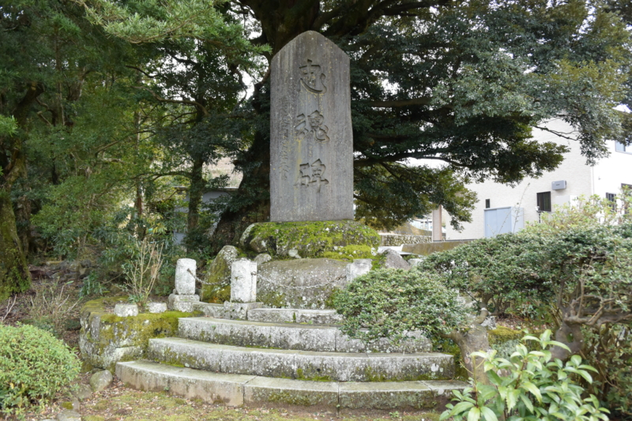
鳥居をくぐると、すぐ右手に大きな忠魂碑が建っている。たぶん、この村からも多くの壮丁が出征していったのだろう。陸軍大将・鈴木壮六書とある。尼港事件で活躍し、戦後は公共事業に尽力された方らしい。
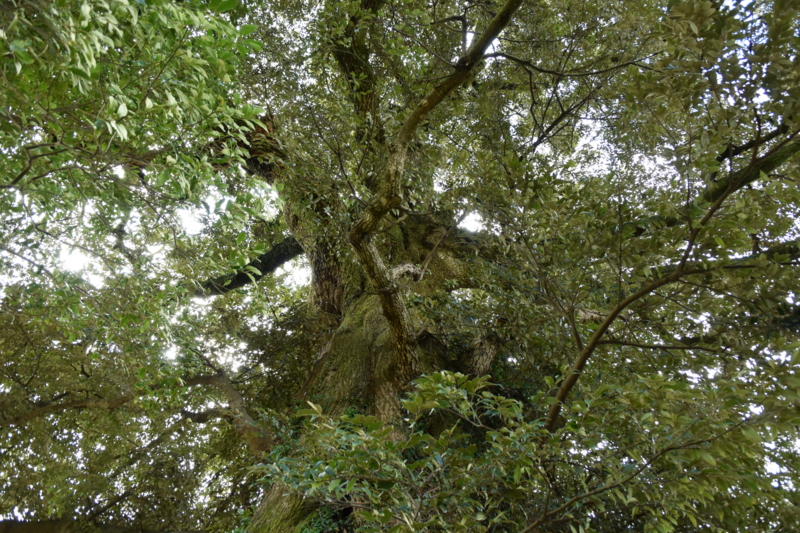
その隣には、忠魂碑を抱くようにして立つ（順番的には逆だけど！）推定樹齢800年のシイノキ。この湯ヶ島でシイタケの人口栽培が発明されてからは、原木としても活躍したとの由。ご神木でキノコ育てるなんて、なかなかにロックだ。
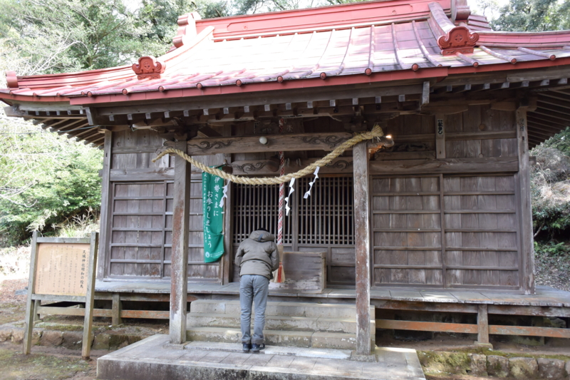
割と質素な本殿。お賽銭をちゃりんと投げ込んで、お参り。「天城」の写真が奉納されているとのことだけど、残念ながら見ることはできなかった。
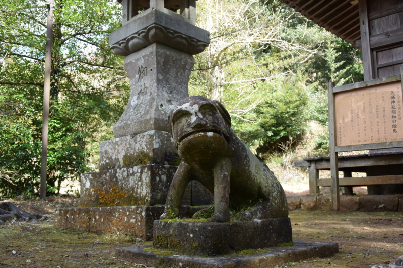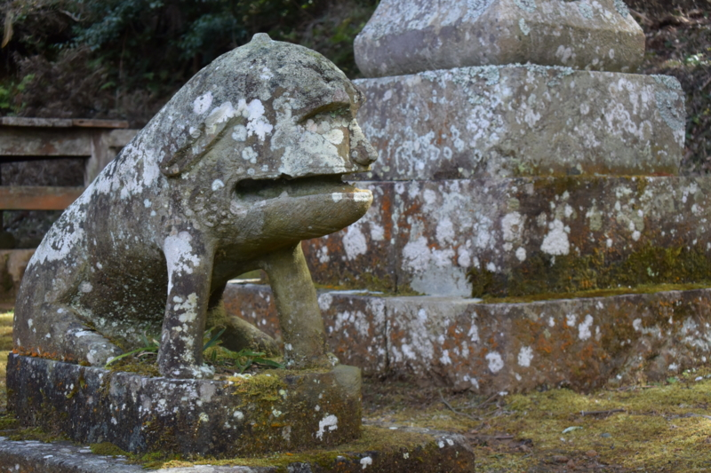
ここの狛犬、ちょっとカワイイ。小首をかしげているように見えるが、これは天城山の方を見ているらしい。普通は厳めしく向かい合ってたり、まっすぐ参拝者の方を見下ろしているイメージがあるが、あまりそういう愛想の振り方はしない主義のようだ。
I'm at 天城神社 https://t.co/MNchBVq7gQ
— ローリング☆だるやなぎズ (@daruyanagi) 2015, 3月 8グルメ
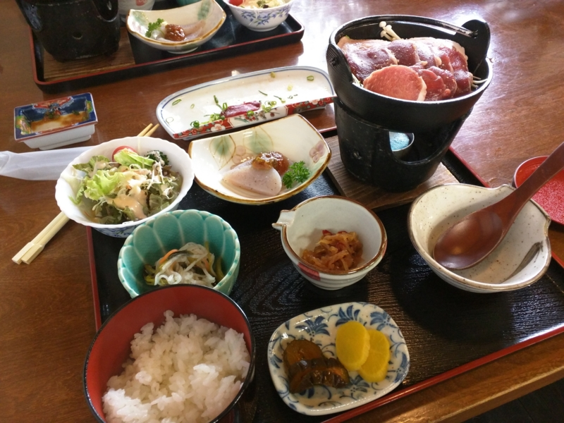
お勧めグルメは、すぐそばにある富士見山荘。シカ肉やイノシシ肉のお鍋が食べられる。予算は昼食で2,000円～3,000円かな？ 写真はシシ鍋定食。
I'm at 富士見山荘 https://t.co/mrDh0QOp1H
— ローリング☆だるやなぎズ (@daruyanagi) 2015, 3月 8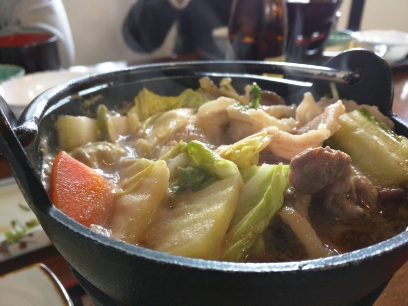
ちょっとボリューム足りないかな？ と思ったけど、食べてみるとナチュラルなパワーが漲ってくるようで、なかなか満足できた。鹿肉のお刺身と、伊豆限定ラベルの付いたビール（黒ラベル）も美味しゅうございました。